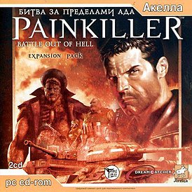

Люцифер пал, однако его «правая рука», генерал Аластор, всё ещё жив и жаждет крови. Он берёт на себя командование остатками демонических армий и продолжает дело Люцифера. Придя на поле боя и обнаружив там Дэниела Гарнера, Аластор спускает на него орды демонов, однако в последний момент обессилившая Ева создаёт портал, который позволяет героям вернуться обратно в Чистилище. Дэниел понимает, что не может оставить всё как есть и Аластор продолжит нападение на Чистилище, а значит необходимо вернуться в Ад и убить злодея. Положение осложняется тем, что врата в Ад были уничтожены во время битвы в Монастыре, которого больше нет. Дэниелу предстоит найти новую дорогу в Ад. Ева показывает Гарнеру предположительное начало, где Аластор может начать собирать новый авангард в свою армию — детский Приют. Оставив девушку отдыхать, герой собирается уходить, но перед этим Ева предостерегает его, что после смерти Аластора к телу нельзя подпускать никого из его прислужников, пока из тела не уйдёт жизненная энергия, иначе коснувшийся может принять его силу и занять место правителя Ада.
С огромным трудом добравшись до Ада и убив Аластора, Дэниел внезапно встречает там Еву, которая утверждает, что следовала за ним с самого начала и осыпает его комплиментами, отмечая мужество и уверенность. Её слова звучат подозрительно фальшиво; в итоге, сказав, что каждому из них уготован свой путь, Ева касается тела Аластора и обретает силу правительницы Ада. Зловеще преобразившаяся Ева говорит Дэниелу, что он может вернуться к Катерине, либо остаться здесь, с ней, и предлагает Гарнеру яблоко — запретный плод. Дэниел не идёт на сделку, обосновывая это тем, что «слишком много воды утекло с тех пор, как она ходила по Саду». Спелый плод в руке Евы покрывается червями и сгнивает; девушка язвительно благодарит Дэниела и уходит, но Гарнер не собирается её отпускать и стреляет из дробовика.
Отзывы критиков и игроков были в целом положительные. Хотя Painkiller: Battle Out of Hell оказалась сравнительно небольшим дополнением (10 уровней и 2 новых оружия) и геймплей кардинально не изменился, разработчики качественно подошли к дизайну. Особенно выделялись некоторые локации — приют, парк развлечений, блокадный Ленинград (зачистка улиц города от зомбированных солдат Вермахта и РККА под сталинский гимн СССР). Были отмечены также звуковое оформление и оригинальные модели монстров.

Painkiller: Battle Out Of
Painkiller: Battle Out Of
Hell
Дата выхода: 22 ноя 2004 г.
Разработчики: People Can Fly
Издатели: DreamCatcher
Платформы: PC
Сайт игры: painkillergame.com
Движок: PainEngine
Жанр: FPS
Язык: Английский
Режимы игры: мультиплеер и одиночная